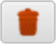
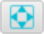
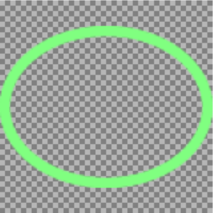
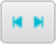
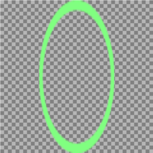
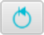

Effekte
Neben der Animation bietet RunPNG noch ein paar nützliche Effekte an. Diese werden fest mit dem fertigen Bild verbunden, denn das allgemein gültige PNG-Format besitzt solche Effektzusätze nicht. Zwar ließen sich durchaus eigene Datenblöcke für so etwas definieren, die würde dann aber außer RunPNG keine andere Software verstehen.
Die Effekte finden sich unter dem gleichnamigen Tabulator in der Seitenleiste.
Effektauswahl
In der Auswahlliste stehen zurzeit vier Optionen zur Verfügung.
Maske: Wer mit Grafikprogrammen vertraut ist, kennt vielleicht die Funktionalität der Ebenenmaske. Dabei handelt es sich um eine Maskierung der Grafik mit einem Graustufenbild. Wobei die Farbe Weiß volle Darstellung bedeutet und Schwarz völlige Transparenz. Die Nuancen dazwischen lassen die Grafik stärker oder schwächer durchscheinend aussehen.
Hintergrund: Der Hintergrund kann eine einfache Farbe, ein hinzugeladenes Bild oder beides sein. Wie der Name bereits sagt, liegt der Hintergrund hinter der Grafik bzw. Bildsequenz.
Vordergrund: Der Vordergrund kann ebenfalls eine einfache Farbe, ein hinzugeladenes Bild oder beides sein. Der Vordergrund liegt vor der Grafik. Wobei die einfache Farbe zumindest durchscheinend sein sollte. Sonst würde man von der animierten Bildsequenz nichts sehen. Ähnlich verhält es sich mit einem hinzugeladenen Bild, das ebenfalls Transparenzen aufweisen sollte.
Flussgenerator: Hierbei handelt es sich genau genommen nicht um einen Effekt, der auf eine Bildsequenz angewendet wird. Der Flussgenerator erzeugt eine neue Bildsequenz auf Basis eines hinzugeladenen Bildes. Das heißt, eine vielleicht zuvor geladene Bildsequenz würde bei Anwendung des Flussgenerators überschrieben.
Die genannten Effekte lassen sich natürlich auch gemeinsam verwenden.
Bildkasten
Die einzelnen Effekte werden auf eigenen Seiten beschrieben. Hier soll es noch um das Element Bildkasten gehen, das auf allen Effektseiten vertreten ist.
In den Bildkasten wird ein einzelnes Bild mit Klick auf die - Taste geladen. Mithilfe der  - Taste lässt sich das Bild wieder entfernen.
An der linken Seite des Bildkastens befinden sich fünf Schaltflächen. Diese Schaltflächen dienen der Skalierung eines geladenen Bildes zum Zwecke der Anpassung. Skalierung ist jedoch nur möglich und sinnvoll wenn das geladene Bild andere Dimensionen besitzt als die, mit der die Applikation arbeitet. Ist eine Dimension - Breite oder Höhe - größer, kann sie gestaucht werden. Ist sie kleiner, kann man sie dehnen. Nehmen wir die folgende Ellipse als Beispiel. Das Bild findet sich unter RunPNG/doc/samples/various/green-ellipse.png.
Laut Tooltip hat die Ellipse 126 x 96 Pixel, während die Applikation in diesem Fall auf 256 x 256 Pixel eingestellt ist. Es besteht also Wachstumspotenzial in beide Richtungen. In diesem Moment ist noch keine Vergrößerungsstufe gewählt. Die einzelnen Skalierungsstufen sehen wie folgt aus.
|  | Symmetrische Skalierung: Das Bild wird unter Beibehaltung des Seitenverhältnisses skaliert. |  | |
 |
Asymmetrische Skalierung: Das Bild wird auf die relative Breite und Höhe der Applikation skaliert. |  | |
|  | Horizontale Skalierung: Das Bild wird auf die relative Breite der Applikation skaliert. Die Höhe bleibt unverändert. |  | |
 |
Vertikale Skalierung: Das Bild wird auf die relative Höhe der Applikation skaliert. Die Breite bleibt unverändert. |  | |
|  | Skalierung zurücksetzen: Das Bild wird auf seine eigenen Maße relativ zur Größe der Applikation zurückgesetzt. |  |
Überspringe erstes Bild
Die Effekte wie Maske, Hintergrund und Vordergrund haben unterhalb des Bildkastens noch ein Optionsfeld für das Überspringen des ersten Bildes. Das ist dafür gedacht den Effekt im Falle des Modus Animiert, überspringe erstes Bild nicht anzuwenden. Es liegt im Ermessen des Anwenders, das zu nutzen. Im Falle der Modi Animiert oder Nicht animiert ergäbe es indes seltener Sinn, das Optionsfeld anzuklicken.